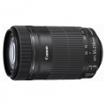

EF-S 55-250mm f/4-5.6 IS STM是采用STM步进马达驱动自动对焦的小型轻量远摄变焦镜头。由于采用了STM步进马达，除静止图像外，在短片拍摄中自动对焦也安静流畅。
有了这个，还需要小小白吗？中心锐度相当高，完全可以PK小小白。
对焦安静，中心锐度高，防抖有效。
塑料感强，耐用性有待验证。
我来当第一个点评的。 锐度高，色彩不差，轻便。
外观： EFs 55-250 is STM外观设计上改变了镜头前端手动对焦环部分， 比前一代EFs 55-250 is看上去整体感更强，更大气一些，更有高级感。 做工： EFs 55-250 is STM 比起前一代EFs 55-250 is做工要强很多，看上去更有高级感。长焦端镜头伸出时完全没有前代松松垮垮的感觉，紧紧实实的，阻尼的感觉很棒，垂直向下不会象24-105L和18-200那样自动伸出来。 对焦（防抖）： 对焦时没有了前一代EFs 55-250 is 防抖系统开启时的震动，对焦安静。 色彩： 1、EFs 55-250 STM 色彩要比18-55is要稍浓厚一些。
1、弱光和目标反差小的情况下拉风箱甚至一直对不上焦的现象严重，有时正常光线下，竟然也有对不上焦的时候，不知道是不是个例。 2、边缘画质差，经同等条件拍摄对比，比18-55is和24-105这2个镜头都明显差一些。